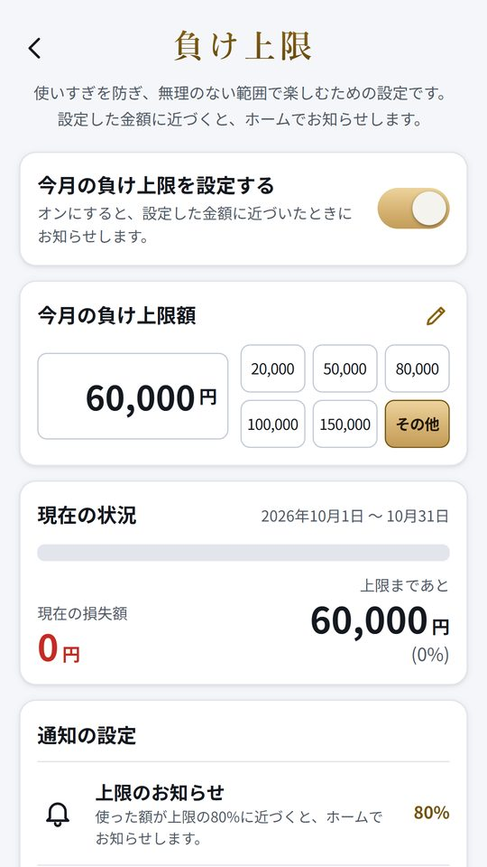
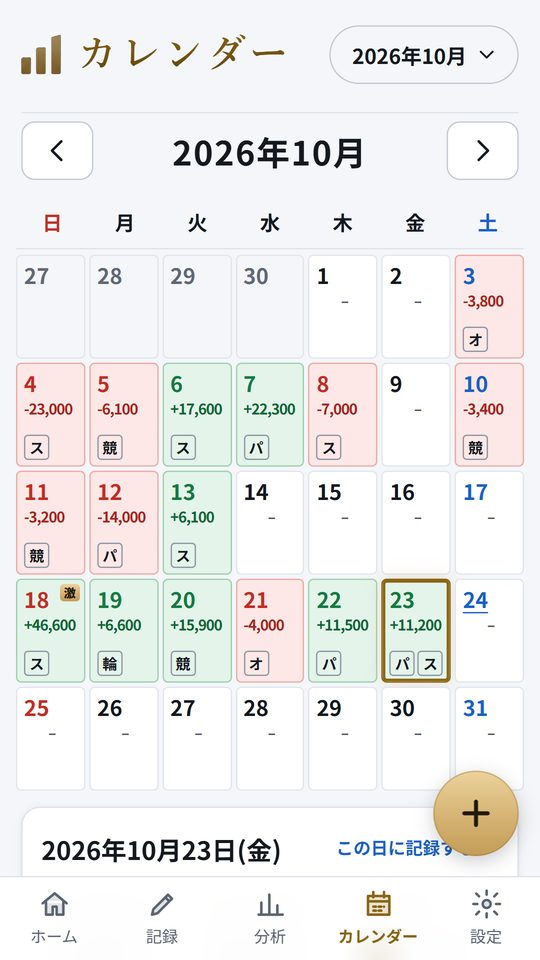
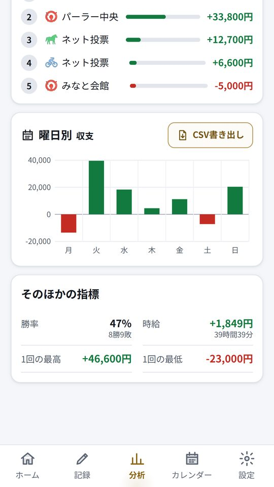
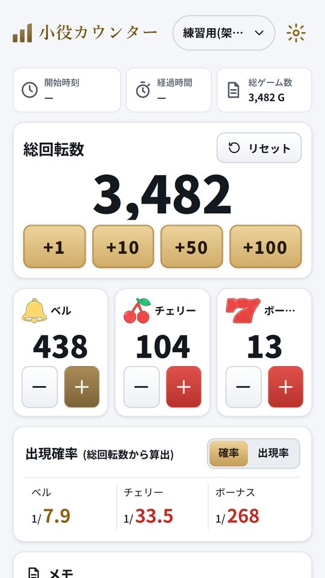

HOW TO USE
記入は、2つの金額だけ
ホールや競技場の帰りに、その日の数字を入れておくだけです。細かい項目はあとから足せます。
種目を選ぶ
パチンコ・スロット・競馬・競輪・ボート・オートから選びます。「前回と同じ」で店や機種もそのまま入ります。
使った額と戻った額
2つの金額を入れると、今回の収支をその場で出します。貯玉・貯メダルはレートと玉数で円に直します。
ホームで今月を見る
今月の収支・回収率・記録件数と、日ごとの推移のグラフが並びます。
上限を決めておく
月の負けの上限を決めておくと、近づいたときにお知らせします。
ANALYSIS
回収率と時給、曜日ごとの収支
分析の画面には、合計の収支・回収率・1回あたりの収支・勝率・時給が出ます。店・機種・曜日・券種ごとの収支も表になるので、どこでお金が出ていっているのかが分かります。
競馬・競輪・ボートは券種も残せます。遊技時間を入れておくと、時給も出ます。


LIMIT
負けの上限で、使いすぎに気づく
月ごとに負けの上限を決めておけます。上限までの残りが画面に出て、使った額が上限の80%に近づくとホームでお知らせします。
記録をつけると、思っていたより使っていた月がはっきり見えます。カチマケは、その数字を自分で確かめるための道具です。
SCREENS
アプリの画面
画面は見本のデータです。




FAQ
よくある質問
記入した収支はどこに保存されますか?
スマホの中だけです。サーバーには送りません。
どの種目に対応していますか?
パチンコ、スロット(パチスロ)、競馬、競輪、ボートレース、オートレースの6つです。ひとつのカレンダーにまとめて記入できます。
貯玉・貯メダルを使った日はどう記入しますか?
記入の画面の「貯玉を使った・貯めた」を開き、レート(4円・1円・20円・5円など)と玉数を入れます。再プレイした分も投資として円に直して入れるので、実際より勝っているように見えることがありません。
使いすぎを止める仕組みはありますか?
月の負けの上限を決めておくと、使った額が上限の80%に近づいたときにホームでお知らせします。
機種変更のときはどうすればいいですか?
設定からバックアップのファイルを書き出し、新しいスマホで読み込むと記入が戻ります。
iPhone 版はありますか?
いまは Android 版だけです。
回収率・時給の計算機と、貯玉の数え方 ・ 競馬・競輪・ボートの払戻率 ・ 使い方とサポート
カチマケは収支を記録するための道具で、賭け事そのものは提供しません。パチンコ・パチスロは18歳未満、公営競技の投票は20歳未満の方は法律で禁止されています。